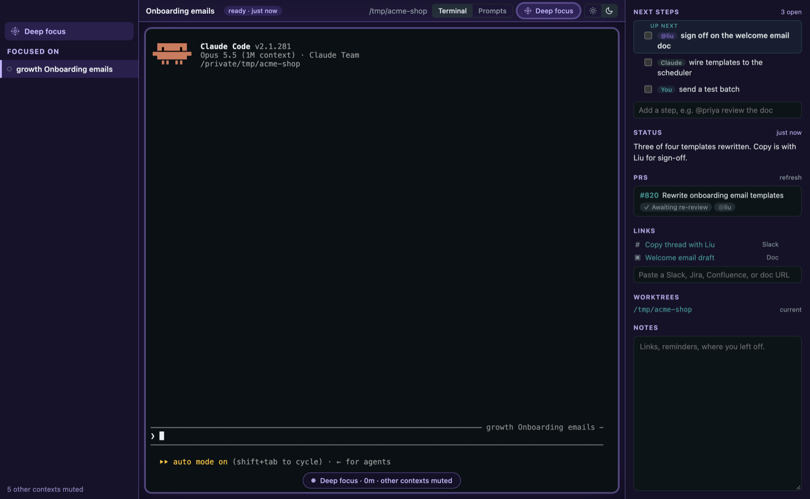
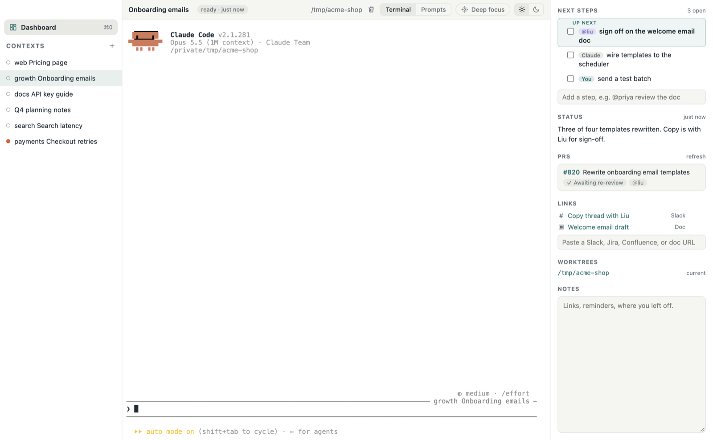

See everything at once
No more tracking multiple browser tabs.
A calm Mac home for your Claude Code work, with every session, PR, and link in one place. Perch stays quiet while you're in flow, and tells you when something needs you.

Already using Claude Code? Pick the sessions you want and Perch resumes each one exactly where it left off.
No more tracking multiple browser tabs.
You hear from Perch only when Claude, a reviewer, or CI is waiting on you.
Automatically detects linked PRs across repos and worktrees.
Quit or update Perch. Your Claude sessions keep running.
Mute every other context and stay with one. Leave when you choose to.


The real Claude Code terminal, with its summary, checklist, PRs, links, and notes beside it.
Contexts, notes, and status live in a local database. No account, no Perch servers.
No analytics or usage tracking. Crash reports are off unless you turn them on, and never include your prompts, terminal output, or code.
GitHub goes through your gh login. Claude Code talks to Anthropic exactly as it does without Perch.
Sessions report to Perch over a local connection that never leaves your machine.
Requires the Claude Code CLI. The GitHub CLI is optional, for PR states.